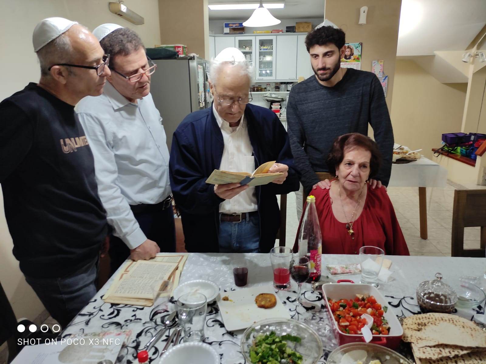
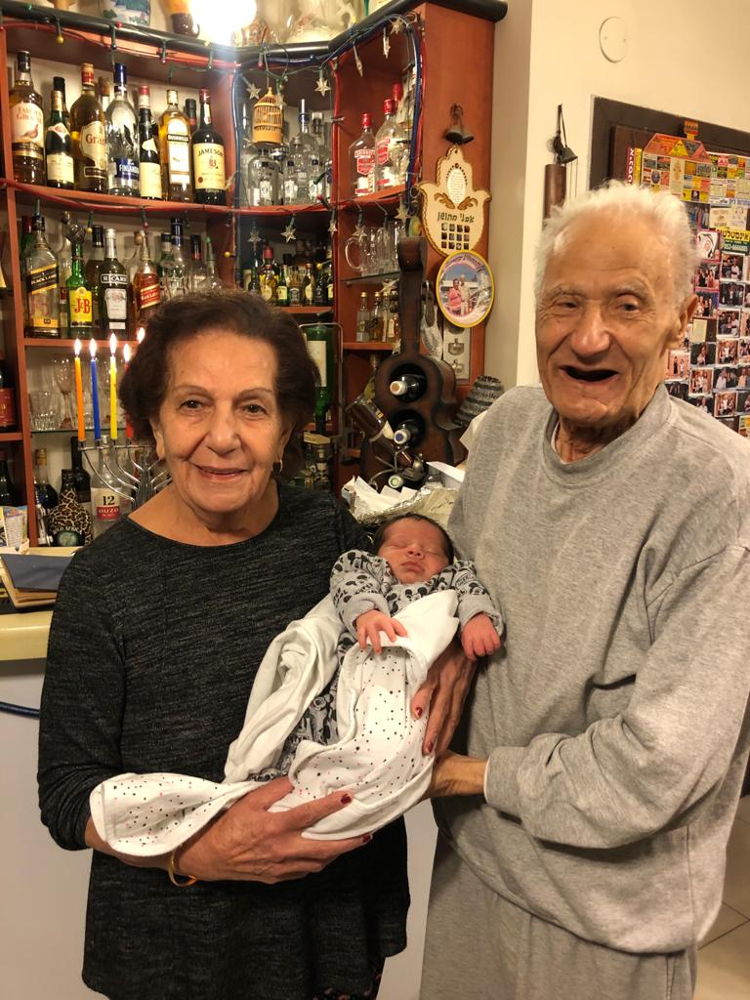
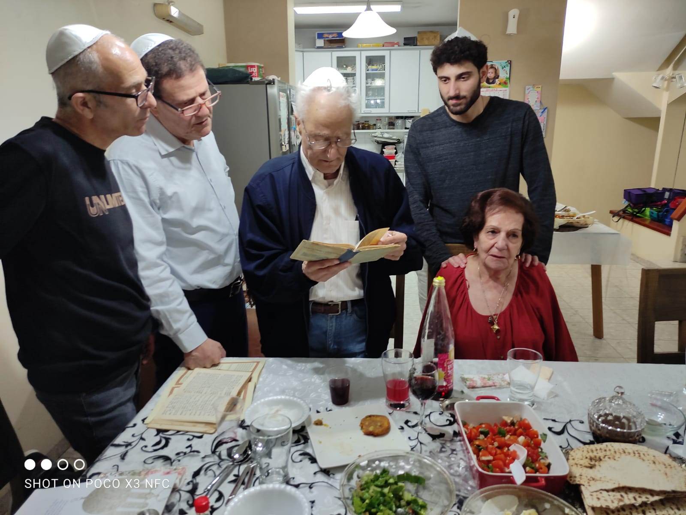
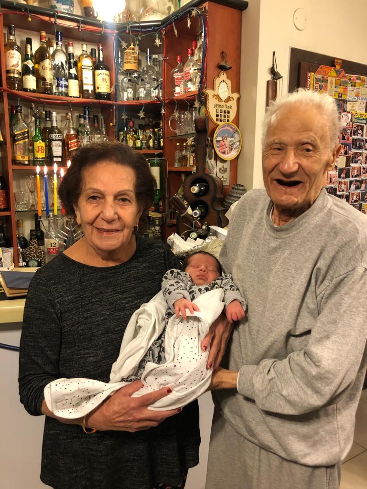

My grandma's name is Carmela. Carmela was born in 1940 in Iraq. She has 8 brothers and sisters. Carmela, her parents and one of her sisters decided to come to Israel illegally in 1951. The way to Israel wasn't easy. They moved slowly to Paras, hided in basements, hiding places, tents. It took 3 weeks and finally they did it. A plane brought them to Israel. They had no money and clothes. She bagan to work while she was 17 in "Friman" industry, "Asis", and "Elit". In 1962 she married to my grandfa, Fuad, and they have 5 children, 14 grandsons & granddaughter and 4 great-grandchildren. She has the most delicious food I have ever eaten and when we asked her the recepi, she says there is no recepi and use our eyes.

 




For her 80 birthday, I wrote her a song based on "Arutz Hakibud" song about all of her food she cook, place she worked, it sounds we say words with no meaning but every word is related to her. All the grandsons and granddaughters did her a special song and we are working on a funny clip at ths days.
שאלה 1
אפשרויות קריאה כתיבה
ב1.0 היו דאגות בנושא פרטיות לכן המידע שניתן היה חד כיווני: כל דפי האינטרנט היו "לקריאה בלבד."
ב2.0 השימוש באינטרנט יכול להיות מאופיין כביזור של תוכן האתר, עם משתמשים רבים שתורמים ומפיקים מידע.
וכל משתמש יכול לשתף או לדבר עם משתמש אחר וכל אחד יוכל לראות זאת
ב3.0 הוא דומה לגרסא הקודמת אבל הוא משתמש בבינה מלאכותית, מצפין מידע.
web 3.0 : כמו הגירסה הקודמת אבל המידע הוא מסוג קריאה כתיבה חכם , הוואב עצמו משתמש בבינה מלכאותית ומסווג
מידע
בעל תוכן סמנטי משותף
רציונל
ב1.0, המטרה העיקרית הייתה לפרסם בעזרת תוכן שחברה או אנשים מסוימים מכניסים
ב2.0 המטרה הייתה להשתתף ולפרסם, לתייג ולקחת חלק פעיל באינטרנט (לעומת קריאה בלבד)
ב3.0 המטרה היא סמנטיות. כל אחד יקבל את המידע שחיפש בצורה שמותאמת אליו ואפילו יהיה סדר לחשיבות התוצאות.
כלומר הוואב יהיה מותאם אישית לכל אחד.
רוחב פס
ב1.0 רוחב פס ממוצע של 50 קילו בייט
ב2.0 רוחב פס ממוצע של 1 מגה בייט
ב3.0 רוחב פס ממוצע של 10 מגה בייט
שאלה 2
מקרה: הכנסת שם של ישות כמו Elon Musk
Web1
נקבל פרטים על הישות (רק קריאה אודות הישות)
Web2
נקבל מידע על הישות ואפשרות לדבר עם איתו, במידה וקיימים הפרטים. ניתן לשלוח מייל, או לשוחח איתו בצ'אט
Web3
תוך כדי התקשרות עם האדם, נאסף מידע על השאילתא באמצעות בינה מלאכותית ונעשה עם זה שימוש בפעמים הבאות